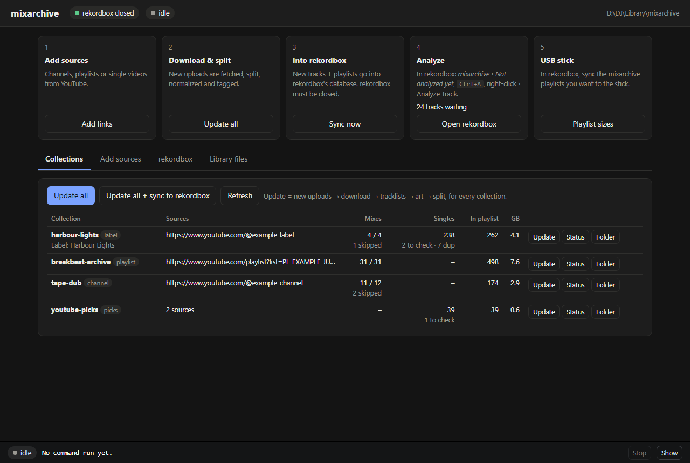
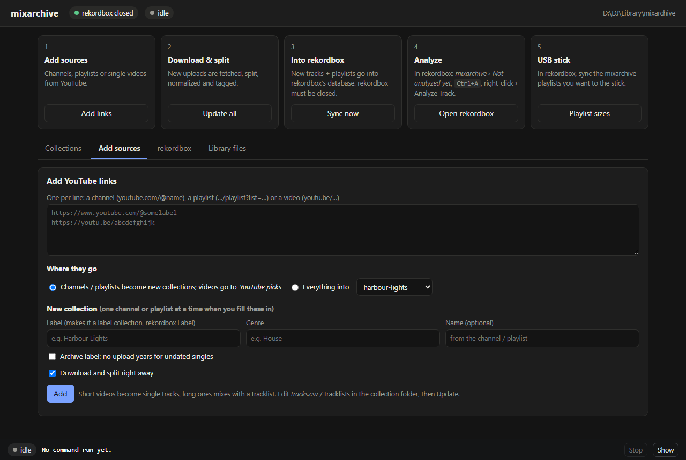
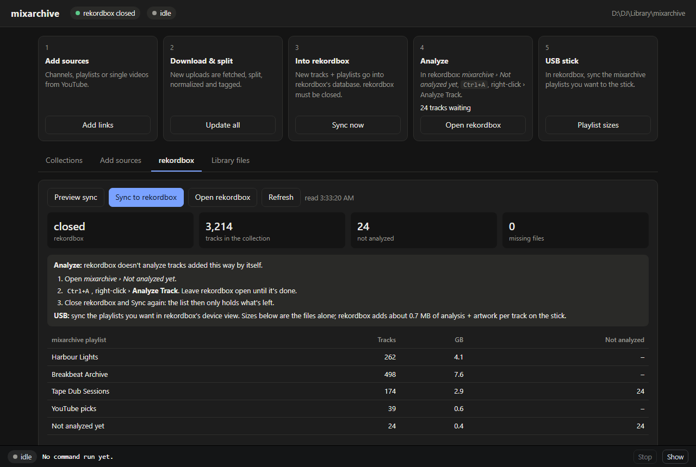
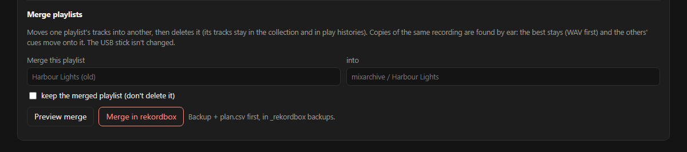

mixarchive Guide
How music gets from YouTube and your own folders onto a USB stick for the decks, which program does each step, and where the safety copies are. Start here. The README lists every command and option.
Paths on this page are examples: C:\mixarchive for the tool, D:\DJ\Library for your music, E: for the USB stick and B: for a backup drive. Use your own. The collections in the screenshots are made up.
How it fits together
Music moves left to right: YouTube, then mixarchive, then your Library folder, then rekordbox, then the USB stick, then the decks. mixarchive does the first three moves on its own. rekordbox does the analysis and the export to the stick, because nothing else can.
The stick holds two databases
When you export a playlist to the stick, rekordbox writes it twice: once for older players and once for newer ones. Most players in use today, such as the CDJ-2000NXS2 and XDJ-1000MK2, read only the older file, export.pdb.
Setup, once
mixarchive runs on Windows next to rekordbox 7. You need Python, ffmpeg and about ten minutes. The README's Requirements section has the details for each piece.
-
1
Get the code
Download mixarchive from GitHub (Code › Download ZIP) and unzip it, or clone it with git, into a folder such as C:\mixarchive. Keep it out of your music folders: it's the tool, not the library.
-
2
Make its Python environment
Terminal in C:\mixarchivePython 3.10 or newer. This installs mixarchive with yt-dlp and the tagging libraries.
py -3 -m venv venvvenv\Scripts\python -m pip install -e . -
3
Make the rekordbox environment
Sync,
filesandmergeread and write rekordbox's database through pyrekordbox, which needs a newer Python for its encrypted-database support. It gets an environment of its own.py -3.14 -m venv rbvenvrbvenv\Scripts\python -m pip install pyrekordbox==0.5.0 mutagen pillow -
4
Tell it where ffmpeg is
Install ffmpeg. If it isn't on your PATH, copy settings.example.json to settings.json in the mixarchive folder and put its paths in. Any setting you leave out keeps its default; the README lists them all.
{ "ffmpeg": "C:\\ffmpeg\\bin\\ffmpeg.exe", "ffprobe": "C:\\ffmpeg\\bin\\ffprobe.exe" } -
5
Add your first collection
The first time,
--rootsays where your library goes. Later collections land next to it, and label collections go in a labels\ folder beside them.mixarchive.bat add https://www.youtube.com/@example-label --label "Harbour Lights" --root "D:\DJ\Library\mixarchive\Harbour Lights"After that, the GUI's Add sources tab does the same without a terminal.
Day to day
Most of the work happens in the mixarchive GUI, a page in your browser. The five cards along its top are the same steps as below. Two rules matter: close rekordbox before mixarchive writes to it, and keep rekordbox open while it analyzes.
-
1
Start the GUI
TerminalOpen a terminal in the mixarchive folder and run the command below. Your browser opens the GUI. Leave the terminal window open while you work, because closing it stops the GUI.
mixarchive.bat gui
-
2
Add sources
GUI › Add sourcesPaste YouTube links, one per line. A channel or playlist becomes its own collection: for a record label, fill in Label and Genre. Single videos go to YouTube picks. Leave Download and split right away ticked.

-
3
Update
GUI › CollectionsUpdate all checks every collection for new uploads, downloads them, finds the tracklists, and splits mixes into tagged, level-matched tracks. Progress shows in the panel at the bottom. Update all + sync to rekordbox also does step 4 if rekordbox is closed.
-
4
Sync into rekordbox
GUI › rekordboxrekordbox closedPreview sync lists what would change; Sync to rekordbox writes it. New tracks land in the playlists inside a mixarchive folder and in Not analyzed yet. A copy of rekordbox's database is saved before every sync. Tracks you drag into a mixarchive playlist yourself stay put.

-
5
Analyze
rekordboxrekordbox openOpen mixarchive › Not analyzed yet, press Ctrl+A, right-click › Analyze Track. Leave rekordbox open until it finishes. If you close it early, the next Sync shrinks the list to what's left.
-
6
Put playlists on the stick
rekordboxrekordbox openPlug in the stick. Export each playlist you want to it from rekordbox, and wait for the export to finish. mixarchive never writes to the stick; this step is rekordbox's.
-
7
Eject and play
WindowsClose rekordbox, then right-click the stick in Explorer › Eject. On the player, browse a playlist or two and load a track to see its waveform and cues.
-
8
Back up
Terminalrekordbox closedCopy the library folder and rekordbox's folder to another drive. backup_library.bat does both, and skips rekordbox's folder while rekordbox is open:
backup_library.bat "D:\DJ\Library" "B:\DJ Backup"It mirrors: files you delete from the library go from the backup too. So give it a backup folder that holds nothing else.
When something looks wrong
The GUI page says "forbidden"
Open the address the terminal prints; it ends in ?t= plus a code. A tab left over from an earlier GUI session won't work. A second GUI started while one is running opens on the next port.
The Sync buttons are greyed out
rekordbox is open. Close it, then press Refresh on the rekordbox tab.
A mix is split in the wrong places
Edit its tracklist in the collection's _mixarchive\tracklists\ folder, then Update and Sync. rekordbox keeps your cues on renamed files.
A single has the wrong artist or title
Edit _mixarchive\tracks.csv (it opens in Excel), then Update and Sync.
rekordbox shows missing files
Old split names vanish after a re-split. Use File › Display All Missing Files and remove them.
New collections land in the wrong folder
New ones go next to the existing ones. Give --root on add to put one somewhere else, or mixarchive move to relocate it later.
A playlist on the stick shows the wrong tracks
In rekordbox's view of the stick, delete that playlist from the stick and export it again, then check it on the player.
Downloads stop working
YouTube changes now and then, and yt-dlp catches up. Update it with venv\Scripts\python -m pip install -U yt-dlp.
Where things live
Each file has an owner. Problems start when two programs write the same file at once, which is why mixarchive waits for rekordbox to close.
| What | Where (example) | Changed by | Rule |
|---|---|---|---|
| mixarchive: code, environments, settings, logs | C:\mixarchive | You (settings), mixarchive (logs) | No music here; reinstallable |
| Your collections | D:\DJ\Library\mixarchive\ | mixarchive (downloads, splits); you edit tracklists | Back it up; keep it off the USB stick |
| Your other music | anywhere, e.g. D:\DJ\Library\WAV | You; files move | files status shows where rekordbox plays from |
| rekordbox library: tracks, playlists, cues | %APPDATA%\Pioneer\rekordbox\master.db | rekordbox; mixarchive Sync, files and merge | mixarchive writes only while rekordbox is closed, after saving a copy |
| Analysis: waveforms, beat grids | %APPDATA%\Pioneer\rekordbox\share | rekordbox (Analyze Track) | Only rekordbox can analyze |
| Copies of rekordbox's database | D:\DJ\Library\_rekordbox backups | mixarchive, before each write | Last 10 of each kind kept |
| Stick databases and audio | E:\PIONEER, E:\Contents | rekordbox export | Nothing else touches them during an export |
Inside a collection
Every collection is one folder. The parts you edit are in _mixarchive; everything else mixarchive rebuilds from them.
D:\DJ\Library\mixarchive\Harbour Lights\
originals\ best YouTube audio, never re-encoded
_mixarchive\
collection.json the collection's settings
tracklists\<id>.txt one per mix: edit to fix a split
tracks.csv one row per single: edit to fix artist / title
art\ square covers
split\MP3 320\ the tracks rekordbox plays
<Mix>\NN - Artist - Title.mp3
_full mixes\ whole mixes, tracklist in the comments
Safety net
Everything that writes to rekordbox saves a copy first. Each row says where the copy is and how to put it back.
| If this went wrong | The copy is in | To undo |
|---|---|---|
| A Sync into rekordbox | _rekordbox backups\<date> rbsync | Close rekordbox; copy master.db and masterPlaylists6.xml back into %APPDATA%\Pioneer\rekordbox |
| A merge | _rekordbox backups\<date> merge, with plan.csv | The same as for a Sync |
A files move, relocate or FLAC run | _rekordbox backups\<date> files-<command>\journal.csv | mixarchive files undo <journal.csv> |
| A lost or damaged music file | Your backup drive | Copy it back |
Five rules that keep it safe
- Close rekordbox before a Sync, a
filescommand, a merge or a backup of its folder. The GUI greys those buttons out while rekordbox is open. - Keep rekordbox open while it analyzes.
- Keep your library off the USB stick and out of any copy of the stick. rekordbox's export files tracks into Contents\, and the next copy of the stick would bring them back as second copies. If you do keep a copy of the stick, set
usb_mirrorin settings.json sofilesflags tracks that play from it. - Keep FLAC off the stick if you play on older players such as the CDJ-400: they can't play it. WAV, AIFF and MP3 play everywhere.
- Eject the stick in Windows before you unplug it.
Merging playlists
Say you built a playlist by hand for a label before mixarchive collected that label's channel. Now you have two playlists with many of the same songs, often as a lower-quality rip in yours. mixarchive merge folds one playlist into the other, keeps the best copy of each recording, and deletes the folded playlist. Its tracks stay in rekordbox's collection.
mixarchive.bat merge "Harbour Lights (old)" --into "mixarchive / Harbour Lights"Without --apply it only previews. The GUI's rekordbox tab has the same thing as a panel, with a second click to confirm.

How it decides
- Find likely pairssimilar names, similar length
- Listensame recording if the audio correlates ≥ 0.85
- Keep the best copyWAV / AIFF › FLAC › higher bitrate
- Move the cuesshifted by the measured offset
- Delete the folded playlistits tracks stay in the collection
Next to a mixarchive copy, yours stays only if it's better
A track that Sync put in a mixarchive playlist always stays there. Your copy of the same recording stays beside it only if it's lossless or at least 320 kbps. So a bought WAV stays and a 128 kbps rip goes.
An example preview
| Track in "Harbour Lights (old)" | Result | Why |
|---|---|---|
| Artist A – Song One (128 kbps rip) | →left out | Same recording as mixarchive's 320 copy (correlation 0.97, 49 ms apart); its memory cue moves over |
| Artist B – Song Two (WAV, bought) | ✓kept | Lossless, better than mixarchive's MP3 |
| Artist B – Song Two (320 MP3, bought) | →left out | Your WAV of the same recording stays |
| Artist C – Live at the Pier (128 kbps) | ✓kept | mixarchive has no copy |
| Artist D – Song Three, listed twice | →once | Repeats are dropped |
What a merge touches
| Affected | What happens |
|---|---|
| Tracks in the collection | ✓None deleted. Copies that leave the playlist stay in the collection. |
| Play histories | ✓Intact, because no track leaves the collection. |
| Cues | ✓Copied onto the copy that stays, shifted by the measured audio offset. A hot cue pad that's already taken is reported, not overwritten. |
| mixarchive Sync | ✓Tracks merged into a mixarchive playlist stay there, after mixarchive's own, and new uploads keep arriving. |
| USB stick | !Not changed. Export the merged playlist to the stick again, and delete the folded one from the stick in rekordbox. |
| Undo | ✓A copy of rekordbox's database and a plan.csv of every decision, in _rekordbox backups\<date> merge. |
Good to know
What it's tested on
Windows 10 with rekordbox 7, exporting to an XDJ-1000MK2. Other setups may work, but haven't been tried.
What it doesn't do
It doesn't analyze tracks or write the USB stick: rekordbox does both. It doesn't delete tracks from rekordbox's collection.
Not affiliated
mixarchive is an independent project, not made or endorsed by AlphaTheta or Pioneer DJ. rekordbox, CDJ and XDJ are trademarks of their owners. It edits rekordbox's database with rekordbox closed and keeps a copy first, but keep your own backups too.
Your music, your responsibility
Download and play only what you have the right to. YouTube's terms limit downloading, and playing music in public needs the licences that apply where you play.